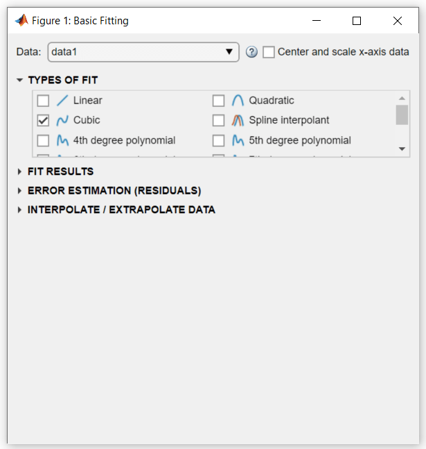
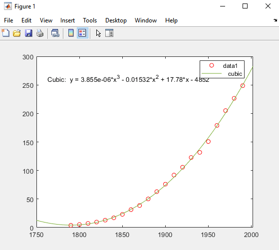
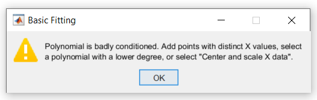
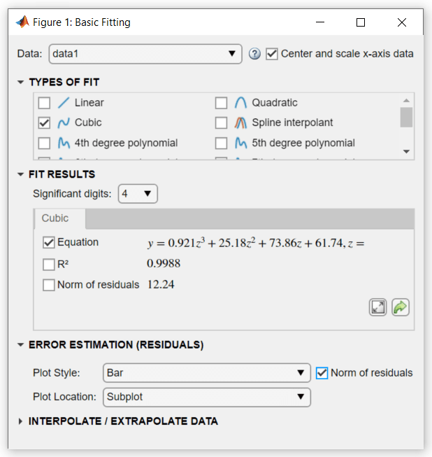
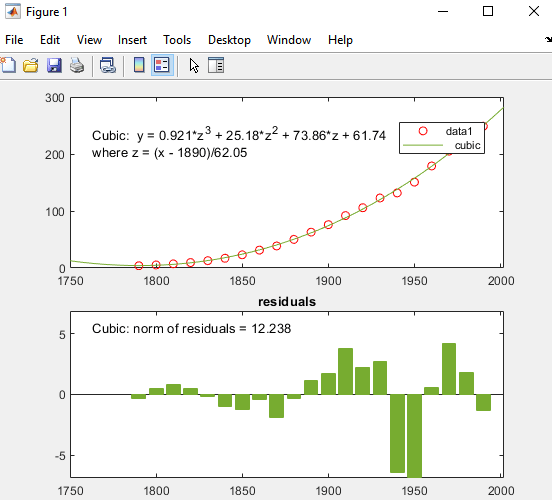
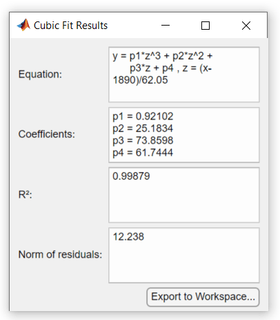
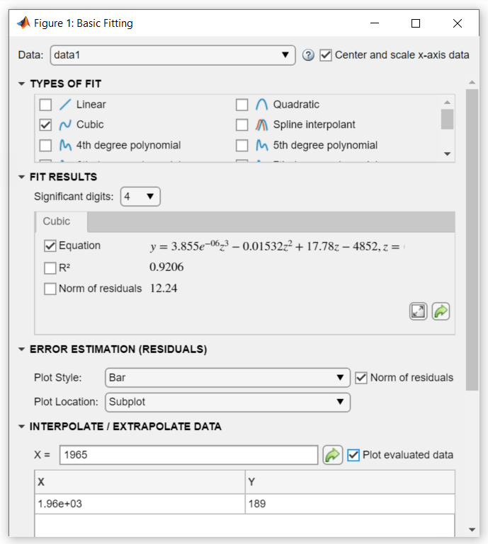
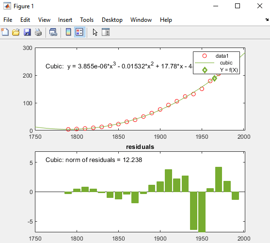
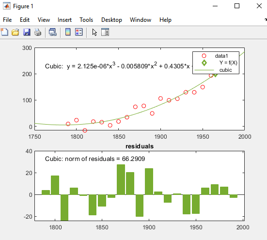
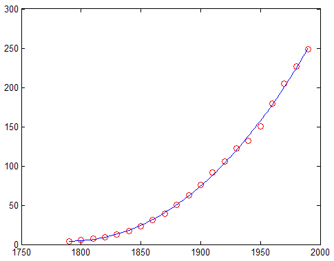

Interactive Fitting
Basic Fitting UI
The MATLAB® Basic Fitting UI allows you to interactively:
Model data using a spline interpolant, a shape-preserving interpolant, or a polynomial up to the tenth degree
Plot one or more fits together with data
Plot the residuals of the fits
Compute model coefficients
Compute the norm of the residuals (a statistic you can use to analyze how well a model fits your data)
Use the model to interpolate or extrapolate outside of the data
Save coefficients and computed values to the MATLAB workspace for use outside of the dialog box
Generate MATLAB code to recompute fits and reproduce plots with new data
Note
The Basic Fitting UI is only available for 2-D plots. For more advanced fitting and regression analysis, see the Curve Fitting Toolbox™ documentation and the Statistics and Machine Learning Toolbox™ documentation.
Preparing for Basic Fitting
The Basic Fitting UI sorts your data in ascending order before fitting. If your data set is large and the values are not sorted in ascending order, it will take longer for the Basic Fitting UI to preprocess your data before fitting.
You can speed up the Basic Fitting UI by first sorting your data. To create sorted
vectors x_sorted and y_sorted from data
vectors x and y, use the MATLAB
sort function:
[x_sorted, i] = sort(x); y_sorted = y(i);
Opening the Basic Fitting UI
To use the Basic Fitting UI, you must first plot your data in a figure window, using any MATLAB plotting command that produces (only) x and y data.
To open the Basic Fitting UI, select Tools > Basic Fitting from the menus at the top of the figure window.
Example: Using Basic Fitting UI
This example shows how to use the Basic Fitting UI to fit, visualize, analyze, save, and generate code for polynomial regressions.
Load and Plot Census Data
The file census.mat contains US population data for the
years 1790 through 1990 at 10 year intervals.
To load and plot the data, type the following commands at the MATLAB prompt:
load census plot(cdate,pop,'ro')
The load command adds the following variables to the
MATLAB workspace:
cdate— A column vector containing the years from 1790 to 1990 in increments of 10. It is the predictor variable.pop— A column vector with US population for each year incdate. It is the response variable.
The data vectors are sorted in ascending order, by year. The plot shows the population as a function of year.
Now you are ready to fit an equation the data to model population growth over time.
Predict the Census Data with a Cubic Polynomial Fit
Open the Basic Fitting dialog box by selecting Tools > Basic Fitting in the Figure window.
In the TYPES OF FIT area of the Basic Fitting dialog box, select the Cubic check box to fit a cubic polynomial to the data.

MATLAB uses your selection to fit the data, and adds the cubic regression line to the graph as follows.

In computing the fit, MATLAB encounters problems and issues the following warning:

This warning indicates that the computed coefficients for the model are sensitive to random errors in the response (the measured population). It also suggests some things you can do to get a better fit.
Continue to use a cubic fit. As you cannot add new observations to the census data, improve the fit by transforming the values you have to z-scores before recomputing a fit. Select the Center and scale x-axis data check box in the top right of the dialog box to make the Basic Fitting tool perform the transformation.
To learn how centering and scaling data works, see Learn How the Basic Fitting Tool Computes Fits.
Under ERROR ESTIMATION (RESIDUALS), select the Norm of residuals check box. Select Bar as the Plot Style.

Selecting these options creates a subplot of residuals as a bar graph.

The cubic fit is a poor predictor before the year 1790, where it indicates a
decreasing population. The model seems to approximate the data reasonably well
after 1790. However, a pattern in the residuals shows that the model does not
meet the assumption of normal error, which is a basis for the least-squares
fitting. The data 1 line identified in the legend are the
observed x (cdate) and
y (pop) data values. The
Cubic regression line presents the fit after centering
and scaling data values. Notice that the figure shows the original data units,
even though the tool computes the fit using transformed z-scores.
For comparison, try fitting another polynomial equation to the census data by selecting it in the TYPES OF FIT area.
View and Save the Cubic Fit Parameters
In the Basic Fitting dialog box, click the Expand Results button to display the estimated coefficients and the norm of residuals.

Save the fit data to the MATLAB workspace by clicking the Export to Workspace button on the Numerical results panel. The Save Fit to Workspace dialog box opens.
With all check boxes selected, click OK to save the fit
parameters as a MATLAB structure fit:
fit
fit =
struct with fields:
type: 'polynomial degree 3'
coeff: [0.9210 25.1834 73.8598 61.7444]Now, you can use the fit results in MATLAB programming, outside of the Basic Fitting UI.
R2, the Coefficient of Determination
You can get an indication of how well a polynomial regression predicts your observed data by computing the coefficient of determination, or R-square (written as R2). The R2 statistic, which ranges from 0 to 1, measures how useful the independent variable is in predicting values of the dependent variable:
An R2 value near 0 indicates that the fit is not much better than the model
y = constant.An R2 value near 1 indicates that the independent variable explains most of the variability in the dependent variable.
R2 is computed from the residuals, the signed differences between an observed dependent value and the value your fit predicts for it.
| residuals = yobserved - yfitted | (1) |
The R2 number for the cubic fit in this example, 0.9988, is located under FIT RESULTS in the Basic Fitting dialog.
To compare the R2 number for the cubic fit to a linear least-squares fit, select Linear under TYPES OF FIT and obtain the R2 number, 0.921. This result indicates that a linear least-squares fit of the population data explains 92.1% of its variance. As the cubic fit of this data explains 99.9% of that variance, the latter seems to be a better predictor. However, because a cubic fit predicts using three variables (x, x2, and x3), a basic R2 value does not fully reflect how robust the fit is. A more appropriate measure for evaluating the goodness of multivariate fits is adjusted R2. For information about computing and using adjusted R2, see Residuals and Goodness of Fit.
Interpolate and Extrapolate Population Values
Suppose you want to use the cubic model to interpolate the US population in 1965 (a date not provided in the original data).
In the Basic Fitting dialog box, under INTERPOLATE / EXTRAPOLATE DATA, enter the X value 1965 and check the Plot evaluated data box.
Note
Use unscaled and uncentered X values. You do not need
to center and scale first, even though you selected to scale
X values to obtain the coefficients in Predict the Census Data with a Cubic Polynomial Fit. The Basic Fitting tool makes the necessary
adjustments behind the scenes.

The X values and the corresponding values for
f(X) are computed from the fit and plotted as
follows:

Generate a Code File to Reproduce the Result
After completing a Basic Fitting session, you can generate MATLAB code that recomputes fits and reproduces plots with new data.
In the Figure window, select File > Generate Code.
This creates a function and displays it in the MATLAB Editor. The code shows you how to programmatically reproduce what you did interactively with the Basic Fitting dialog box.
Change the name of the function on the first line from
createfigureto something more specific, likecensusplot. Save the code file to your current folder with the file namecensusplot.mThe function begins with:function censusplot(X1, Y1, valuesToEvaluate1)
Generate some new, randomly perturbed census data:
rng('default') randpop = pop + 10*randn(size(pop));Reproduce the plot with the new data and recompute the fit:
censusplot(cdate,randpop,1965)
You need three input arguments: x,y values (
data 1) plotted in the original graph, plus an x-value for a marker.The following figure displays the plot that the generated code produces. The new plot matches the appearance of the figure from which you generated code except for the y data values, the equation for the cubic fit, and the residual values in the bar graph, as expected.

Learn How the Basic Fitting Tool Computes Fits
The Basic Fitting tool calls the polyfit function to compute
polynomial fits. It calls the polyval function to evaluate
the fits. polyfit analyzes its inputs to determine if the
data is well conditioned for the requested degree of fit.
When it finds badly conditioned data, polyfit computes a
regression as well as it can, but it also returns a warning that the fit could
be improved. The Basic Fitting example section Predict the Census Data with a Cubic Polynomial Fit displays this
warning.
One way to improve model reliability is to add data points. However, adding observations to a data set is not always feasible. An alternative strategy is to transform the predictor variable to normalize its center and scale. (In the example, the predictor is the vector of census dates.)
The polyfit function normalizes by computing
z-scores:
where x is the predictor data, μ is the mean of x, and σ is the standard deviation of x. The z-scores give the data a mean of 0 and a standard deviation of 1. In the Basic Fitting UI, you transform the predictor data to z-scores by selecting the Center and scale x-axis data check box.
After centering and scaling, model coefficients are computed for the y data as a function of z. These are different (and more robust) than the coefficients computed for y as a function of x. The form of the model and the norm of the residuals do not change. The Basic Fitting UI automatically rescales the z-scores so that the fit plots on the same scale as the original x data.
To understand the way in which the centered and scaled data is used as an intermediary to create the final plot, run the following code in the Command Window:
close load census x = cdate; y = pop; z = (x-mean(x))/std(x); % Compute z-scores of x data plot(x,y,'ro') % Plot data as red markers hold on % Prepare axes to accept new graph on top zfit = linspace(z(1),z(end),100); pz = polyfit(z,y,3); % Compute conditioned fit yfit = polyval(pz,zfit); xfit = linspace(x(1),x(end),100); plot(xfit,yfit,'b-') % Plot conditioned fit vs. x data
The centered and scaled cubic polynomial plots as a blue line, as shown here:

In the code, computation of z illustrates
how to normalize data. The polyfit function performs the
transformation itself if you provide three return arguments when calling
it:
[p,S,mu] = polyfit(x,y,n)
p, now are based on
normalized x. The returned vector, mu,
contains the mean and standard deviation of x. For more
information, see the polyfit reference page.